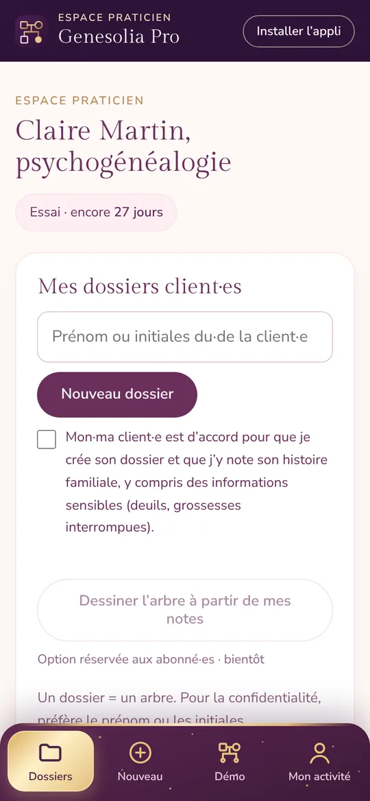
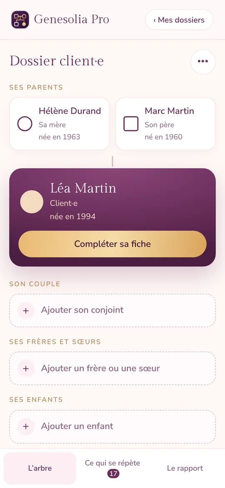

Logiciel de génosociogramme en ligne · Espace praticien
Le logiciel qui dessine le génosociogramme de vos client·es en quelques minutes
Un logiciel en ligne pour les professionnel·les de l’accompagnement : un dossier par client·e, l’arbre en plein écran pendant la séance, les répétitions qui ressortent toutes seules, et l’arbre remis à la fin du travail.
Sans carte bancaire. ✦ Offre de Noël pour tout abonnement pris avant le 31 décembre : 19 € par mois au lieu de 24 €, ou 190 € l’année au lieu de 240 €, garanti tant que votre abonnement continue. Conditions de l’Espace praticien. TVA non applicable, art. 293 B du CGI.
- Hébergé en Europe
- Notes chiffrées
- Accord de chaque client·e
- Rien à installer

Ce que vous y gagnez
Moins de saisie, plus d’écoute
Tout ce qu’un compte particulier ne fait pas, pensé pour votre cabinet.
Vous gagnez du temps
Le questionnaire avant séance dessine l’arbre pour vous. Vous commencez directement par l’essentiel.
Vous voyez ce qui se répète
Plus de 25 pistes repérées toutes seules : âges, dates, prénoms, places dans la fratrie, deuils.
Vous travaillez à deux
Le mode séance affiche l’arbre en plein écran, sans menus, au cabinet comme en visio.
Vous remettez un vrai support
Un rapport PDF ou Word à votre nom, et l’arbre que votre client·e garde à la fin du travail.
Vous travaillez sereinement
Notes chiffrées, données en Europe, accord de chaque client·e, connexion en deux étapes.
Vous trouvez des client·es
Votre fiche dans l’annuaire Genesolia : les personnes qui font leur arbre vous trouvent.
| Compte particuliergratuit | Genesolia Pro1er mois offert, puis 19 € par mois (Noël) | |
|---|---|---|
| Dessiner son arbre, voir les répétitions | ✓ | ✓ |
| Import Geneanet et GEDCOM, rapport PDF | ✓ | ✓ |
| Un dossier par client·e, sans limite | — | ✓ |
| Questionnaire rempli par le·la client·e avant la séance | — | ✓ |
| Notes de séance chiffrées, exportables | — | ✓ |
| Mode séance en plein écran | — | ✓ |
| Lien de partage entre deux séances, puis l’arbre remis | — | ✓ |
| Rapport à votre nom, notes en annexe | — | ✓ |
| Lien de supervision anonymisé | — | ✓ |
| Votre fiche dans l’annuaire | — | ✓ |
| Appli Genesolia Pro sur votre téléphone | — | ✓ |
Essayez la démo
Voyez par vous-même, avec une famille fictive
- L’arbre de Léa, déjà rempliQuatre générations, comme après un questionnaire.
- Les répétitions repéréesTouchez une personne : âges, dates et prénoms qui reviennent.
- Le mode séance et le rapportL’arbre en plein écran, puis le rapport prêt à remettre.
Sans compte, 2 minutes. Rien n’est enregistré. Quand vous êtes prêt·e, vos 30 jours offerts commencent sans carte bancaire.
Le mode d’emploi pas à pas : chaque écran de Genesolia Pro expliqué, du premier dossier au rapport.
L’outil, tel qu’il est
Ce que vous verrez dans votre Espace praticien
Ces images viennent de l’outil, avec une famille fictive.

 Zoom sur une répétition
Zoom sur une répétitionCe qui se répète
Les répétitions ressortent pendant la saisie
Dates anniversaires, âges, prénoms qui reviennent, places dans la fratrie, deuils, métiers : plus de 25 pistes sont repérées automatiquement. Un clic sur une répétition la trace dans l’arbre, avec les lectures possibles et des questions pour en parler en séance.
Vous gagnez le temps du repérage, et vous gardez le vôtre pour l’écoute.

Le rapport
Un rapport PDF à votre nom
L’arbre, les chiffres clés, chaque répétition expliquée avec ses pistes de réflexion, la lignée en nombres et en étoiles si votre pratique les utilise. La couverture porte votre nom.
Vous pouvez y ajouter vos notes de séance en annexe, si vous le choisissez.


Sur téléphone, et pour vos client·es
L’arbre suit vos client·es, jusque dans leur espace
Sur téléphone, l’arbre se lit d’un coup d’œil : la personne au centre, sa famille autour, une case à toucher pour ajouter quelqu’un.
Entre deux séances, vos client·es regardent leur arbre par un lien. Quand le travail est terminé, l’arbre se télécharge ou se garde dans leur espace Genesolia.
Exports
Tout ce que vous faites s’exporte, à votre nom
Ce que vous préparez dans votre Espace praticien ne reste pas enfermé dans l’outil : vous le remettez, vous l’imprimez, vous l’archivez.
- PDFLe rapport de l’arbreVotre nom sur la couverture, l’arbre, les chiffres clés et chaque répétition expliquée. Vos notes en annexe, si vous le choisissez.
- Image HDL’arbre en haute définitionLe génosociogramme complet en image nette, à projeter, à imprimer ou à joindre à un compte rendu.
- PDFVos notes de séanceToutes les notes d’un dossier, datées et rangées, dans un document personnel à archiver.
- LienL’arbre remis à votre clienteQuand le travail est terminé, elle le télécharge ou le garde dans son espace Genesolia. En cadeau : son arbre à encadrer.
Confidentialité
Les données de vos client·es, protégées
Vous travaillez avec des histoires familiales. Elles méritent un cadre clair.
- Hébergement en Europe : les données sont stockées sur des serveurs situés en Irlande.
- Notes chiffrées : vos notes de séance sont chiffrées avant d’être enregistrées. Elles ne sont jamais montrées dans le lien de partage, ni copiées dans l’espace de vos client·es.
- L’arbre remis seulement si vous le décidez : tant que vous n’avez pas coché « Travail terminé », le lien reste en lecture seule.
- Données sensibles, avec l’accord de vos client·es : un arbre peut contenir des informations sensibles (deuils, naissances, secrets de famille). Avant de créer chaque dossier, vous confirmez que votre client·e est d’accord, et vous le supprimez en un clic à sa demande.
- Connexion en deux étapes : en plus de votre mot de passe, un code à 6 chiffres de votre téléphone. Une fois activée, les dossiers ne s’ouvrent qu’avec ce code.
- Suppression à la demande : un dossier et ses notes se suppriment en un clic, dès que votre client·e le demande.
- Conservation limitée : un dossier est gardé tant que votre espace est ouvert, puis effacé 12 mois après la fin de votre abonnement.
Comment ça marche
Du premier rendez-vous à l’arbre remis
- 1Ouvrez votre Espace praticienLe nom de votre activité, et c’est parti : 30 jours pour l’utiliser avec vos vrai·es client·es. Un dossier exemple, avec une famille fictive, s’ouvre en un clic pour tout essayer.
- 2Créez un dossier par client·eUn prénom ou des initiales suffisent. Vous dessinez l’arbre en séance, ou vous importez un fichier Geneanet ou GEDCOM.
- 3Travaillez l’arbre ensembleLe mode séance affiche l’arbre en plein écran. Les répétitions ressortent, et vous notez ce que vous observez, séance après séance.
- 4Partagez, puis remettez l’arbreUn lien en lecture pendant le suivi. Quand le travail est terminé, vous cochez une case : vos client·es repartent avec leur arbre.
Le lien de partage, en deux temps
Vous créez un lien depuis le dossier et vous l’envoyez. C’est vous qui décidez de ce que vos client·es peuvent en faire.
Pendant le suivi
Vos client·es regardent leur arbre
- Le lien ouvre l’arbre en lecture seule : on le voit, on le parcourt, on le montre à sa famille.
- Pas de téléchargement ni d’impression : l’arbre reste dans votre Espace praticien.
- Vous continuez à le compléter en séance : le lien montre toujours la dernière version.
Travail terminé
Vos client·es repartent avec leur arbre
- Dans le dossier, vous cochez « Travail terminé ».
- Sur le lien, deux boutons apparaissent : télécharger l’arbre (image ou PDF) et le garder dans son espace Genesolia, gratuit.
- L’arbre gardé leur appartient, et se complète sans passer par vous.
Dans les deux cas, vos notes de séance ne sont jamais visibles ni copiées. Un lien reste valable 14 jours, se renouvelle en un clic depuis le dossier et se désactive à tout moment. Vous choisissez aussi ce qu’il montre : l’arbre seul, ou avec les répétitions, sans les pistes délicates si vous préférez. Vous pouvez décocher « Travail terminé » à tout moment : ce qui a déjà été gardé reste chez vos client·es.


Votre appli Genesolia Pro
Votre Espace praticien, dans votre poche
Une icône sur votre écran d’accueil, et votre Espace praticien s’ouvre comme une vraie appli. Une barre en bas pour passer de l’un à l’autre :
- Le mode séance et vos notes à portée de main, même en rendez-vous.
- Les mêmes dossiers sur votre téléphone, votre tablette et votre ordinateur.
- Gratuit avec votre Espace praticien, sans passer par un magasin d’applis.
En 45 secondes
Du questionnaire au rapport
Votre cliente remplit son questionnaire, son arbre se dessine, les répétitions ressortent, vous remontez le temps, vous remettez un rapport à votre nom. Famille fictive.
Pourquoi pas autre chose ?
Ce que les autres façons de faire ne font pas
| Ce dont vous avez besoin | Papier et crayon | Logiciel de dessin | Logiciel de généalogie | Logiciel de génogramme avec IA | Genesolia |
|---|---|---|---|---|---|
| Dessiner le génosociogramme | Long | À la main | Arbre classique | Oui, à partir de notes collées | Oui, symboles compris |
| Repérer les répétitions (dates, âges, prénoms, fratrie) | Non | Non | Rarement | Rarement | Automatique |
| Questions à explorer en séance | Non | Non | Non | Non | Pour chaque piste |
| Un dossier rangé par client·e | Classeur | Fichiers | En partie | Oui | Oui, illimité |
| Notes de séance privées | Carnet | Non | Non | Selon l’outil | Chiffrées |
| Rapport à votre nom | Non | Non | Non | Export du dessin | En PDF, et en Word à retoucher |
| Remettre l’arbre à vos client·es | Une photocopie | Une image | Non | Une image ou un PDF | Lien, PDF, ou leur propre espace |
| En français, pensé pour la psychogénéalogie | Oui | Non | Non | Surtout en anglais, pensé pour le génogramme classique | Oui |
| L’arbre pré-rempli avant la première séance | Non | Non | Non | À partir de vos notes, par l’IA | Questionnaire rempli par votre client·e, chez lui·elle |
| La famille à une date donnée, reliée aux répétitions | Non | Non | Non | Rarement | Oui, avec les échos d’âge |
| Des client·es qui vous trouvent | Non | Non | Non | Non | L’annuaire Genesolia |
Comparaison
Genesolia ou un logiciel de génogramme avec IA ?
Les logiciels avec IA transforment des notes d’entretien en un premier dessin. C’est rapide, mais ce dessin n’est qu’un point de départ : il reste à lire ce qui se répète, à préparer les questions et à remettre un travail à votre client·e.
C’est précisément ce que fait Genesolia, en français et pour la psychogénéalogie :
- votre client·e remplit son questionnaire chez lui·elle ;
- l’arbre arrive pré-rempli dans son dossier ;
- les répétitions ressortent automatiquement ;
- vous remettez un rapport à votre nom ;
- l’annuaire vous amène de nouveaux·elles client·es, ce que les logiciels de génogramme ne font pas.
Et l’arbre dessiné par l’IA à partir de vos notes ? Cette option est actuellement soumise à un sondage auprès des praticien·nes. Elle ne sera développée que si elle vous intéresse, et restera facultative. Vous pourrez donner votre avis depuis votre Espace praticien.
Tout est inclus
Ce que vous avez dans votre Espace praticien
- InclusDossiers client·es illimitésUn arbre par client·e, rangé à part de vos arbres personnels, retrouvé en un clic.
- InclusNotes de séance chiffréesVos observations par séance, chiffrées avant d’être enregistrées, exportables en PDF à votre nom.
- InclusMode séanceL’arbre en plein écran, sans menus, pour le regarder à deux.
- InclusLien de partageVos client·es voient leur arbre entre deux séances, sans vos notes. Il se renouvelle en un clic.
- InclusL’arbre remis à la finQuand vous le décidez, vos client·es le téléchargent ou le gardent dans leur espace gratuit. Vos notes restent à vous.
- InclusRapport à votre nomLe rapport de l’arbre en PDF, à votre nom, avec vos notes en annexe si vous le choisissez.
- InclusPlus de 25 pistes repéréesÂges, dates, prénoms, places dans la fratrie, deuils : repérés automatiquement, avec des questions guidées.
- InclusVos propres repères, en couleurPosez vos mots sur les personnes (« s’efface », « porte la famille »…). Quand un mot revient d’une génération à l’autre, l’arbre le montre.
- InclusImport Geneanet et GEDCOMPas besoin de tout ressaisir. Numérologie et astrologie reliées à l’arbre, si votre pratique les utilise.
- InclusL’appli Genesolia ProVotre Espace praticien sur l’écran d’accueil de votre téléphone : vos dossiers, le mode séance et vos notes d’un geste.
- InclusQuestionnaire avant séanceVotre client·e remplit sa famille chez lui·elle, sans compte. Ses réponses arrivent dans son dossier, et l’arbre se dessine en un clic.
- InclusRemonter le tempsLa famille l’année d’une naissance ou d’un deuil, la frise de la lignée, et les échos d’âge de cette année-là.
- Inclus11 liens relationnelsFusionnel, ambivalent, coupé, alliance, secret partagé, enfant confident·e… et un lien libre avec votre propre mot.
- InclusRapport en WordÀ côté du PDF, une version Word pour retoucher le texte avant de le remettre.
- InclusLien de supervisionUn dossier anonymisé, sans prénoms ni dates exactes, à montrer à votre superviseure ou votre formatrice.
- InclusVotre fiche dans l’annuaireLes personnes qui dessinent leur arbre sur Genesolia vous trouvent, près de chez elles ou en visio.
- À l’étude · votre avis compteL’arbre dessiné à partir de vos notesColler vos notes de premier rendez-vous et voir l’arbre se dessiner en brouillon, en validant chaque personne : nous étudions cette option. Vous pourrez donner votre avis depuis votre Espace praticien. Tout le reste de l’Espace praticien fonctionne sans.
Nouveau
L’annuaire des praticien·nes Genesolia
Des particuliers dessinent leur arbre sur Genesolia, puis cherchent quelqu’un pour les accompagner. L’annuaire leur présente les praticien·nes abonné·es, près de chez soi ou en visio. Votre fiche se remplit depuis votre Espace praticien. Les premières fiches sont présentées en premier.
Arrivent aussi : votre logo et vos couleurs sur le rapport, et un avantage sur Le Cercle à offrir à vos client·es.
Tarif
Un abonnement simple
24 €19 €par mois, sans engagement · offre de Noël avant le 31 décembreou 240 € 190 € l’annéeTVA non applicable, art. 293 B du CGI
- 30 jours offerts, sans carte bancaire, avec vos vrai·es client·es
- Offre de Noël : 19 € par mois, ou 190 € l’année pour tout abonnement pris avant le 31 décembre, garanti tant que votre abonnement continue. Ensuite : 24 € par mois ou 240 € l’année
- Autant de dossiers que vous voulez, avec leurs rapports et leurs exports à votre nom
- Après l’essai sans abonnement, vos dossiers restent consultables
- Les 30 jours offerts comprennent tout ce qui est décrit sur cette page.
Moins d’un tiers de séance par mois. L’outil gratuit reste réservé à un usage personnel : avec des client·es, c’est l’Espace praticien.
Avant de vous abonner, prenez connaissance des documents qui encadrent votre Espace praticien : les conditions d’utilisation et de vente, l’accord de sous-traitance des données, la politique de confidentialité et les mentions légales.
Vous animez une formation en psychogénéalogie ?
Vos élèves travaillent sur leur propre génosociogramme : Genesolia leur fait gagner le dessin et le repérage. Écrivez-nous pour un accès dédié à votre promotion.
Écrire à GenesoliaQuestions fréquentes
Genesolia ou un logiciel de génogramme avec IA ?
Les logiciels avec IA dessinent un premier arbre à partir de notes collées. Genesolia part d’un questionnaire que votre client·e remplit chez lui·elle : l’arbre arrive pré-rempli dans son dossier, puis Genesolia repère les répétitions (dates, âges, prénoms, fratrie), propose des questions pour chaque piste, vous donne un rapport à votre nom en PDF et en Word, et vous présente dans l’annuaire. Tout est en français et pensé pour la psychogénéalogie.
L’arbre dessiné à partir de mes notes, c’est obligatoire ?
Non. Cette option est à l’étude, et vous pouvez donner votre avis depuis votre Espace praticien. Si elle voit le jour, elle sera facultative : vos notes ne seraient envoyées à un service d’intelligence artificielle que si vous l’activez vous-même, et ce service serait précisé sur la page Confidentialité avant. Sans elle, rien ne sort de votre Espace praticien.
Est-ce un logiciel à installer ?
Non. Genesolia est un logiciel en ligne : il s’ouvre dans votre navigateur, sur ordinateur, tablette ou téléphone, et peut s’ajouter à l’écran d’accueil comme une appli. Vos dossiers sont sauvegardés et se retrouvent sur tous vos appareils.
Génogramme ou génosociogramme : quelle différence ?
Le génogramme représente la famille sur trois générations ou plus, avec ses liens. Le génosociogramme y ajoute les événements de vie (dates, deuils, unions, métiers, déménagements) pour faire ressortir ce qui se répète d’une génération à l’autre. Genesolia dessine les deux : vous commencez par la famille, et chaque date ajoutée enrichit la lecture.
Puis-je essayer avant d’ouvrir mon espace ?
Oui. La démo montre une famille fictive déjà remplie, sans compte. Et l’essai de 30 jours est sans carte bancaire, avec un dossier exemple pour tout tester sans toucher à vos vrais dossiers.
Genesolia remplace-t-il un accompagnement ?
Non. Genesolia est un outil de travail et une grille de lecture symbolique de l’histoire familiale. Il vous aide à dessiner et à explorer un génosociogramme avec vos client·es, mais ne pose aucun diagnostic et ne remplace pas un avis médical ou psychologique. L’accompagnement reste le vôtre.
Comment fonctionne l’offre de Noël ?
Pour tout abonnement pris avant le 31 décembre 2026, vous payez 19 € par mois au lieu de 24 €, ou 190 € l’année au lieu de 240 €, et ce prix vous reste tant que votre abonnement continue. Ensuite, c’est 24 € par mois ou 240 € l’année.
Est-ce que mes client·es voient mes notes ?
Jamais. Le lien de partage montre l’arbre sans vos notes ni vos repères. Quand vous remettez l’arbre, seules les personnes et leurs liens sont copiés. Si l’on vous demande ce que vous avez noté, vous pouvez exporter vos notes en PDF.
Comment se passe la remise de l’arbre ?
Quand le travail est terminé, vous cochez « Travail terminé » dans le dossier et vous envoyez le lien de partage. Sur ce lien, l’arbre peut alors être téléchargé en image ou en PDF, ou gardé dans un espace Genesolia personnel et gratuit. Vous pouvez décocher à tout moment : ce qui a déjà été gardé reste dans l’espace où il a été copié.
Faut-il un compte à mes client·es ?
Non pour regarder leur arbre : le lien suffit. Oui, gratuit, seulement pour le garder dans leur espace à la fin.
Que se passe-t-il à la fin de l’essai ?
Vos dossiers restent consultables. Pour créer de nouveaux dossiers et de nouveaux liens de partage, il faut l’abonnement.
Y a-t-il un mode d’emploi ?
Oui. Genesolia Pro, pas à pas explique chaque écran : créer un dossier, envoyer le questionnaire, le mode séance, les notes, le rapport, le lien de partage et votre abonnement.
Où sont hébergées les données de mes client·es ?
En Europe (Irlande). Les notes de séance sont chiffrées avant d’être enregistrées, et un dossier se supprime en un clic à la demande de votre client·e.